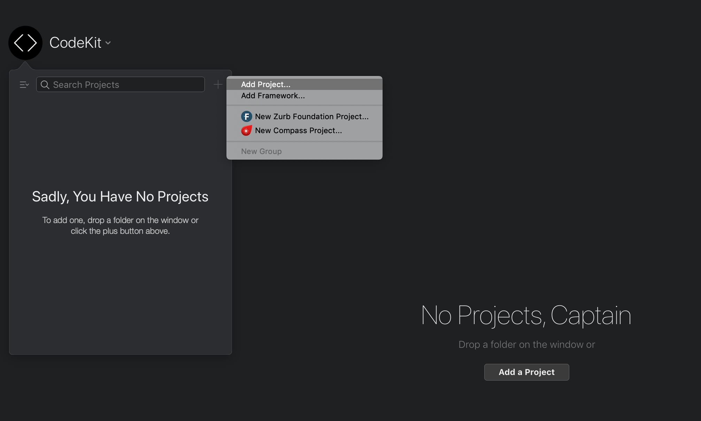
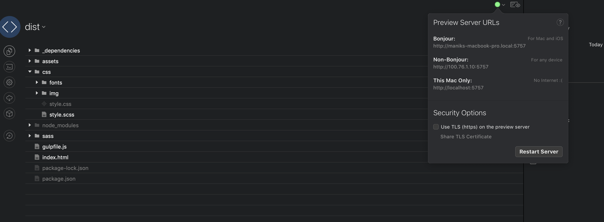

Getting Started
WoodPecker can be used to fit into your preferred development enviornment. All you need to do is to compile the scss files into the desired style.css file that you want to include into your page. We have following set of instructions for setting up WoodPecker® with Gulp and Codekit.
Setup With Gulp and npm
WoodPecker® comes with configuration files for Gulp and npm. The browserSync configation is done for you so that you get a perfect development environment with automatic broswer refreshing using gulp and browserSync. Follow the following steps to setup gulp and npm.
Installing Node.js and npm
First of all you need to ensure that Node.js is installed on your system and npm installed as well. For instructions on installing Node.js check here . To check if Node.js is installed correctly run the following command.
node --version
Node also installs npm along with it. To ensure that npm is installed as well run the following command.
npm --version
Since, we have Node and npm installed let's just lets just install Gulp CLI globally on the system to do so use the following command
npm install --global gulp-cli
Now copy the contents of the dist directory and move the content to your project directory. Now navigate to your project directory in terminal and run the following command to install all the required dependencies to run the setup
cd myProject
npm install
Once all the dependencies have been installed by npm all you need to do is to run gulp and gulp will automatically watch all the changes and do the following:
-
Gulp will watch for any changes made to
*.scssfiles and automatically compilescssfiles tocss - Upon changes made to any of the files gulp will reload the browser automatically.
gulp
Running the above command should fire a webserver and load index.html in the browser with the following details
[Browsersync] Access URLs:
------------------------------------
Local: http://localhost:5000
External: http://*yourIpAddress*:5000
------------------------------------
UI: http://localhost:3001
UI External: http://localhost:3001
------------------------------------
[Browsersync] Serving files from: ./
That's it! You can start developing now.
Setup using Codekit
If you are using a macOs, you can easily setup WoodPecker® using CodeKit as well. Let's start by creating a new project in Codekit. Create a new directory for your project and copy all the contents of the dist directory to your project directory. Once all the contents have been copied navigate to CodeKit and create a new project using your project directory.
Once you select the project folder, CodeKit would display all the files like so.
That's it!! Were you expecting more? CodeKit takes care of browser relaoding as well as compiling sass for you. You don't need to set up anything else.
Pro Tip: CodeKit uses sourcemaps while compiling Sass to css. This can increase the size of the final css file. For production builds, it is suggested that you disable sourcemaps in Settings => Frameworks => Compass.
Including the required files in HTML
In the dist directory you get an HTML file which is a boilerplate for you to start writing
your own
code. This contains all the css and javascript files that you need to include in your HTML. Here are an
explanation of each of the includes.
The following files need to be included in the header
<head>
<!-- Include the jQuery file needed by Bootstrap -->
<script src = "assets/js/jquery.js"></script>
<!-- Link The Compiled WoodPecker CSS file -->
<link rel = "stylesheet" href = "/css/style.css">
</head>
The following files need to be included before </body>
<!-- Optionally Link FontAwesome CSS -->
<link rel = "stylesheet" href = "https://cdnjs.cloudflare.com/ajax/libs/font-awesome/4.7.0/css/font-awesome.min.css" />
<!-- Include the Bootstrap Js Bundle -->
<script src = "assets/js/bundle.js"></script>
<!-- Include the WoodPecker JS Module Loader -->
<script data-main = "assets/js/requirejs-config.js" src = "assets/js/require.js"></script>
<!-- Include Custom JS File for any custom Javascript If Needed. This is a blank file -->
<script src = "assets/custom.js"></script>
HTML Markup needed for WoodPecker to function properly
<!-- WoodPecker Preloader -->
<div id = "wdpk-page-load-animate" class = "wdpk-page-load-animate">
<div class = "wdpk-spinner" role = "status">
<span class = "sr-only"></span>
</div>
</div>
<!-- / WoodPecker Preloader -->
<!-- Mandatory Main Container -->
<div id = "wdpk-main" class = "wdpk-main">
<!-- Write Your HTML Here -->
</div>
<!-- / Mandatory Main Container -->
That's it. Have Fun!